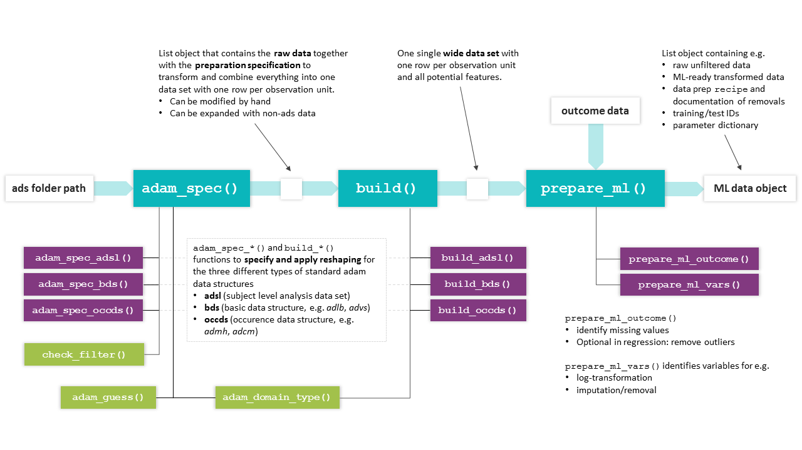

Preparation of ADaM data for Machine Learning
A hands-on tutorial
Source:vignettes/prepare-adam-data-hands-on.Rmd
prepare-adam-data-hands-on.RmdScope
Package
The martini package was developed as part of a pipeline
for machine learning and artificial intelligence, that aims to assess
the relation of information stored in clinical study data with a given
outcome while meeting the validation and documentation standards for
software that is used in clinical trials.
martini provides a convenient framework to gather
information from different clinical data sets and to combine them into a
machine-learning-ready data set. The output is designed to be handed
over to internal down-stream packages for modelling and reporting, but
can of course also be used with the modelling framework of your
choice.
The automated part of the preparation workflow is handled by the
three main functions of martini, namely
The package was developed in the clinical context which is reflected in the default settings and specifics of both the main and helper functions. This vignette is solely focused on the standard clinical setting. However, the functions may also be used with more general data sets, please refer to the individual help pages for full details.
Vignette
This vignette serves as a hands-on tutorial on the usage of the
martini package. It clearly outlines the required steps to
get from an ads folder (containing analysis data sets in ADaM format) to
a machine learning data set, listing a number of commonly required
adaptations along the way.
The package comes with a number of example data sets, ranging from
raw sas data sets to be read in, to data objects representing
intermediate steps (e.g. martini_spec,
martini_feat) as well as the final output object
(e.g. martini_ml_class) for further use in the
modules of the
pipeline.
High-level concept
In the (admittedly unrealistic) case that no manual adaptations have to be made to the data contained in the ADaM data sets included in the analysis, the full preparation could be accomplished by running the composed command
where path would be defined as the location where the
ADaM data sets are stored in .sas7bdat or .rds
format. The chart below highlights the main workflow and lists related
helper functions (mostly internal).

Overview of martini functions. The basic workflow from ads
path to ML data object is accomplished by the main functions
(turquoise), which make use of the (mostly internal) helper functions
shown below.
Outcome preparation
Format
It is recommended to clearly define the outcome of interest and
prepare the outcome data set independently from the feature
engineering process. The outcome data set may contain information on
different endpoints in a single tibble, with one row per id
and the different outcomes in the columns. In practice, separate data
sets for each outcome are preferable for large studies, considering the
potentially higher preparation times. For time-to-event data, each
endpoint is described by two columns (representing time and status,
resp.).
For survival, the outcome information is coded in two separate
columns, e.g. days and event. Note that in
this case, for the specification of the outcome names for
prepare_ml(), a named vector is expected in the survival
case,
e.g. outcome_names = c(.time = 'days', .status = 'event').
Example data sets
The package comes with three exemplary outcome data sets, one each
for classification, regression and survival tasks. For regression and
classification, both are two column tibbles with an .id and
an .out column, where in the classification example shown
below, the .out variable is a factor with two levels
(event/no event).
martini_outc_class %>%
head(3) %>%
kableExtra::kable() %>%
kableExtra::kable_styling(full_width = FALSE)Development shortcut
Since the analysis of survival endpoints is computationally much more expensive than for classification, the latter may be used for initial runs by using a dichotomized version of the endpoint (i.e. event yes/no in given time frame). When binarizing time-to-event endpoints, please pay attention to the study duration (potentially reduce to subjects with minimum time under observation) and the resulting outcome distribution (highly unbalanced data, low event rate?).
Note for use with Bayer internal pipeline
Please note that currently, only binary classification is fully supported by the MARTINI pipeline.
Time-to-event preparation
For convenience, the package also provides
build_out_tte(), which allows to prepare a tte-based
outcome for further use with prepare_ml(). Starting from
either file (specifying the path to an ADaM
adtte.sas7bdat) or an already existing data
object with the same structure, the user has the option to prepare
either a tte outcome or a binarized version. In the latter case, a
duration of interest has to be specified in cut and the
resulting endpoint translates to
e.g. event in first 2 years (yes/no). Make sure, that the
scale of cut matches the scale of the time column, i.e. if
AVAL is in days, cut has to be in days, no
conversion is done internally. cut is provided as numeric,
not object of class duration.
build_out_tte(
# either file or data have to be provided
file = "adtte.sas7bdat",
# select e.g. parameter of interest, subset to population
filter = 'PARAMCD == "CVDEATH"',
# AVAL is in days, cut is used as threshold
cut = 365*2
)Please note, that while the full population will be used for tte
outcomes, the population for the binarized version is subsetted:
Patients are discarded, if a censored event was recorded with a time
below the cutoff of interest (here 2 years). If a patient has not been
observed for the duration of cut, there is no information
on whether or not an event occurred within cut.
Example study MARTINI
Assume an example study containing four data sets in
.sas7bdat format, covering the three different ADaM data
types:
- adsl (adsl, wide format)
- adlb (bds, long format)
- advs (bds, long format)
- admh (occds, long format)
These data sets will be used to illustrate how to make manual adaptations in order to customize the preparation process to a particular analysis and research task.
In addition to these raw data sets, the following data sets are available as examples for the intermediate data sets produced during the preparation process:
-
martini_specresult ofadam_spec()applied to ads folder -
martini_featresult ofbuild(), a wide data set containing information of all selected domains -
martini_outc_regr,martini_outc_class,martini_outc_survprepared outcome data sets (in practice, e.g. from adtte) -
martini_ml_regr,martini_ml_class,martini_ml_survresult ofprepare_ml(), objects of typemartini_mlcontaining ML ready data and documentation of data preparation steps
We will focus on the description of the main functions, but each package function (exported or not) has its own help page, so feel free to learn more about the detailed functionality on the individual pages.
Getting started
In the setting of clinical studies, we assume that a set of analysis
data sets (ads) is stored in .sas7bdat or .rds
format in a single folder path.
After specifying the folder location
# path <- 'path/to/sasfiles'
path <- system.file(
"martini_example_study", "ads",
package = "martini",
mustWork = TRUE
)you may check beforehand which data sets can be processed automatically to make sure, all information of interest can be incorporated in the analysis. Running
adam_domain_type(path)returns a tibble with the name of the domain, its mapped ADaM data
types (occds/adsl/bds) as well as the full file path. For domains with
type=='none' no mapping information is available (yet) and
the data set would not be processed automatically.
adam_domain_type(path)
#> # A tibble: 4 × 4
#> domain type file_ext file
#> <chr> <chr> <chr> <chr>
#> 1 adlb bds sas7bdat /home/runner/work/_temp/Library/martini/martini_example…
#> 2 admh occds sas7bdat /home/runner/work/_temp/Library/martini/martini_example…
#> 3 adsl adsl sas7bdat /home/runner/work/_temp/Library/martini/martini_example…
#> 4 advs bds sas7bdat /home/runner/work/_temp/Library/martini/martini_example…In case a particular domain is required for your analysis but not
included in the current list, use [adam_spec()]’s parameters
add_occds and add_bds, respectively, to
specify names of additional data sets to process.
TL;DR
d_ml <- path %>%
# create automated spec
adam_spec() %>%
# make adjustments
adjust_adsl("adsl", drop = c("AGEGR01")) %>%
adjust_spec("admh", count = FALSE) %>%
# build combined wide data set
build() %>%
# prepare data for ml
prepare_ml(outcome = martini_outc_class)Pay attention to the output in the console. If applicable, the following information will be provided
-
adam_spec()- data sets that could not be processed automatically
- assessment of the filter applicability
-
build()- bds-type data sets with duplicate measures will be reported. Duplicates may be indicative of missing filters (e.g. ABLFL == 1), thus resulting in incorrect data preparation. Check back with the information on filters applied to the respective data set.
adam_spec()
The adam_spec() function creates a preprocessing
specification in the form of a list from a given path.
Each entry contains the required information to extract relevant records
from a particular data set and reshape the data into wide format. The
structure of the top level entries depends on the type of the
corresponding data set (adsl/bds/occds).
Among other steps, adam_spec() will
- generate md5 checksums
- identify data sets that can be processed automatically (by matching file names against an internal library)
- check applicability of provided filters
- create a parameter dictionary
In general, this automatically created specification may be used with the subsequent workflow, however, in practice, it will be modified by the user to match specific requirements.
Printing the martini_spec object to the console will
provide information on data set size, derived numbers of columns and
subjects (after filter application).
ads_spec <- adam_spec(path)
#> ℹ admh: The columns MHOCCUR and MHOCCURN contain N/0 values.
#> • Please check if an additional filter is required such as `--OCCUR == 'Y' |
#> is.na(--OCCUR)`.
ads_spec
#>
#> Content
#> name type size nsubj ncol
#> adsl adsl 128K 320 7
#> adlb bds 1.31M 289 11
#> advs bds 448K 289 5
#> admh occds 192K 320 2
#>
#> Key columns used in bds-type data sets
#> name param value unit time
#> adlb PARAMCD AVAL AVALU AVISIT
#> advs PARAMCD AVAL AVALU AVISIT
#>
#> Key columns used in occds-type data sets
#> name label value valuen count
#> admh MHHLGT NA NA TRUEMake yourself familiar with the list structure and contained
information of the spec object:
ads_spec %>% str(max.level = 1)
#> List of 4
#> $ adsl:List of 16
#> ..- attr(*, "filter_ok")= logi TRUE
#> ..- attr(*, "data_info_ok")= logi TRUE
#> $ adlb:List of 17
#> ..- attr(*, "filter_ok")= logi TRUE
#> ..- attr(*, "data_info_ok")= logi TRUE
#> $ advs:List of 17
#> ..- attr(*, "filter_ok")= logi TRUE
#> ..- attr(*, "data_info_ok")= logi TRUE
#> $ admh:List of 15
#> ..- attr(*, "filter_ok")= logi TRUE
#> ..- attr(*, "data_info_ok")= logi TRUE
#> - attr(*, "class")= chr [1:2] "martini_spec" "list"adsl column selection
In contrast to occds and bds type data, column selection from the (already) wide format adsl data sets usually contains a larger number of columns.
martini generates a starting point for the selection by
excluding columns based on different heuristics.
Reasons for column exclusion are documented in the
drop_list entry of the corresponding spec entry. Exclusion
criteria include, but are not limited to datetime/duration-related
columns or analysis set flags.
Important parameters of adam_spec()
# selection of adam_spec() parameters covered in more detail in this section
adam_spec(
filter = NULL,
attach_data = TRUE,
keep = NULL,
drop = NULL,
add_bds = NULL,
add_occds = NULL,
fct_levels = NULL
)Filters
The filter argument takes a character vector of
expressions to be passed to dplyr::filter(). A filter will
be applied to a particular data set only if its (individual) application
yields a non-empty tibble (i.e. no error thrown, at least one row is
selected). In addition, the function will throw a message, if the
combination of all valid filters would yield an empty data set.
Common filters may be based on visit or treatment information, as
well as flags indicating analysis sets. If a filter should be applied to
only one particular ads domain and not considered for the other domains,
just add the respective ADSNAME column (which should be
available according to CDISC standards),
e.g. "ADSNAME == 'ADVS' & AVISIT == 'Visit 1'".
Filters have to be adjusted for the data at hand, find below a list of exemplary filters:
filters <- c(
# use only baseline data
"AVISIT == 'Baseline'",
"ABLFL == 'Y'",
# no baseline visit in advs domain, use visit 1 instead
"AVISIT == 'Visit 1' & ADSNAME == 'ADVS'",
# ITT population
"ITTFL == 'Y'",
"!is.na(TRT01A)",
# exclude a single parameter
"PARAMCD != 'BPDIA'",
# some MH and CM entries have a Y/N coding (but not all)
"MHOCCUR == 'Y' | is.na(MHOCCUR)",
"CMOCCUR == 'Y' | is.na(CMOCCUR)"
)
ads_spec <- adam_spec(
path,
filter = filters
)An overview of applied and discarded filters from the filters
provided to \link{adam_spec}() is printed to the console
when calling \link{adam_spec}() as well as when printing
the object to the console. The filter set that was originally provided
to \link{adam_spec}() is stored in the filter
attribute of the resulting object.
Always double check the filters that were not applied, typically it is due to
- typos
- misspecified filter expressions (e.g.
=instead of==) - targeted domain no longer included in the analysis
For any updates of the originally provided set of filters, use
adjust_filter().
ads_specDomain selection
For standard data sets names included in martini’s
internal library, use parameters keep/drop to select data
sets for the analysis. To use data sets outside of this collection use
add_bds/add_occds.
keep/drop
Use keep/drop arguments in adam_spec() to
select/deselect particular data sets in the folder path for
your analysis. Only selected files will be read in order to create a
specification, so these parameters directly impact run time.
An example for a reasonable exclusion of a data set would be e.g. a
data set on biomarkers that were measured only for a small subpopulation
(by default, data sets are combined using
dplyr::full_join(), but it’s a parameter to
build()).
add_bds/add_occds
adam_spec() will print a list of domains that are not
processed automatically, which are the ones that are not included in the
internal package library of domains and corresponding data types.
You may use the add_bds/add_occds arguments
of adam_spec() to force them being treated as bds and occds
data sets, resp.. For these added data sets, it is particularly
important to check the automated column selection (in the resulting spec
object) and adjust as needed using adjust_spec() before
proceeding to the build() stage.
ads_spec <- adam_spec(
path,
add_bds = 'adfapr'
)
# print to check the key column definition
ads_specAttach data
In order to create a data set specification, the data set has to be
read first which may take a considerable amount of time for large files.
For a more time-efficient usage, the data sets may be stored directly in
the ads_spec object from where the actual execution of the
preparation will be conducted.
In the current implementation, if changes to any of the data sets shall be made (see below), all data sets have to be attached.
ads_spec <- adam_spec(
path,
attach_data = TRUE
)Using rds data
For martini version >=0.5.1, not only files but also data in rds format may be used (see argument in ).
If for instance, only particular treatment groups or visits are considered for an analysis, filtering the original data sets and storing them as , may speed up the data preparation significantly for larger data sets.
Suppose all domains of interest are available in a subset/filtered version and stored as data in .
ads_spec <- adam_spec(
path,
file_ext = "rds"
)Adaptations to adam_spec()
After the initial martini_spec object was created, the
user should inspect the object and make necessary adjustments. It is
strongly recommended to use the build-in helper functions where
possible, since they provide some basic checks of the desired
modifications in terms of consistency and applicability.
Some entries are protected from such adjustments altogether, for
adjustments of entries filter, factor_levels
and column selection from adsl the respective specialized functions
should be used (adjust_filter(),
adjust_adsl_factors(), and
adjust_adsl_select(), resp., see separate subsections
below).
For other adjustments, the adjust_spec() function allows
to adjust the parameter of a particular entry of the
martini_spec object, related to the data extraction, such
as param and label for bds entries or
value and count for occds entries.
Filters
The function adjust_filter() allows to update the set of
filters for the martini_spec object. If an error in the
filter expression is detected during the inspection of the spec object,
e.g. in the filter information section of the console output from
printing, the set of filters can be adjusted easily without rerunning
the adam_spec() as long as the data is attached. If no data
is attached, the filter checks cannot be performed and
adam_spec() should be re-run to avoid any downstream
issues.
Handling adsl
Factor levels in adsl
The function adjust_adsl_factors() can be used to adjust
or expand the factor level list. The level order will determine for
example the display order in tabular outputs in certain contexts.
In the following example, the factor level order for the variable
RACE is reversed and labels are changed to lower case.
Assigning factor labels is particularly useful for variables that were
automatically identified as factors, but do not have the desired labels
(e.g. due to missing decode column as typical for ADaM 2.0 and/or issues
with reading the label information from the sas catalog file).
martini_spec <- martini_spec %>%
adjust_adsl_factors(
fctrs = list(
"RACE" = c(asian = "ASIAN", black = "BLACK", white = "WHITE")
)
)In addition to reordering and relabeling existing factors in the list, it is also possible to add variables to the factor list that would have been dropped otherwise.
Note, that the factor level list contains information on all detected
factors, irrespective of whether they are selected or not. Refer to
adsl’s dictionary (selected) to see which factor levels are
actually applied.
martini_spec <- martini_spec %>%
adjust_adsl_select(add = "AGEGR01N") %>%
adjust_adsl_factors(
fctrs = list(
"AGEGR01N" = c("< 60" = 1, "60 - <75" = 2, ">=75" = 3)
)
)Variable selection from adsl
A common task is to review and adjust the automated variable
selection from adsl by inspecting martini_spec$adsl$dict
(or simply martini_spec$adsl$select).
Reasons for dropping variables from the automated selection may include but are not limited to:
- post baseline information (MARTINI pipeline aims at assessing the relation of baseline information with a given outcome. Consequently, outcome-related information should be removed (e.g. death flag))
- variables are available in both a continuous as well as categorical version (e.g. age, BMI, weight, potentially across domains), there is no automated selection available
- different groupings based on the same variable (e.g. country group)
The adjustment can be accomplished by using the
adjust_adsl_select() function, which allows to either add
or drop variables from the automated selection. Small adjustments can be
made using the drop and add arguments, but the
user can also provide the exact set of variables to extract using the
select argument. In the latter case, make sure to include
the variables with special roles id and trt in
the adam_spec() function to avoid the corresponding
warnings.
martini_spec <- martini_spec %>%
adjust_adsl_select(
add = c("BMI"),
drop = c("AGE")
)
martini_spec <- martini_spec %>%
adjust_adsl_select(
select = c("SUBJID", "TRT01A", "SEX", "RACE", "AGE", "BMI")
)
# warnings for missing id and trt
martini_spec <- martini_spec %>%
adjust_adsl_select(
select = c("SEX", "RACE", "AGE", "BMI")
)For large data sets, the creation of the select vector
may be cumbersome. In this case, it may be helpful to extract the
current selection and adjust it using e.g. the
stringr::str_subset() function to make use of regular
expressions.
user_selection <- ads_spec$adsl$select %>%
# remove post baseline information
setdiff(c('DEATHFL')) %>%
# categoricals with a continuous version
str_subset("AGEGR|BMIGR|WEIGGR|RACEGR", negate = TRUE) %>%
# several grouped versions available
str_subset("CNTYGR[2-7]") The removal of variables that are not derived from adsl, but from one
of the long format data sets, the removal is actual accomplished by
applying a filter, please refer to the section on
adjust_filter() for more information.
General adaptations using adjust_spec()
Change data set label
adam_spec() automatically selects a label
column in occds data sets (e.g. admh), that controls the categorization
of the occurrences and defines the variables that are created by the
build() function. If you need a more or less detailed
categorization, you need to change the label entry.
# change label column in admh
ads_spec %>%
adjust_spec(
id = "admh",
label = "MHBODSYS"
)
# equivalent to
# ads_spec $admh$label <- "MHBODSYS"Value column for bds type data
In order to create a wide data set from bds type data, the main
operation is the application of tidyr::pivot_wider().
adam_spec will guess the appropriate columns to use for
names_from and values_from (if not provided)
and store them in the list entries param and
value of the respective spec entry, respectively,
e.g. param = PARAMCD and value = AVAL.
Please do check the entries before moving on to build()
to ensure correct handling of variable types. If necessary, use
adjust_spec() to make any changes.
For some domains, variables may differ in type, i.e. while some are
numeric (and AVAL) should be used, others might be
available in character format (e.g. high/low, where AVALC).
Appropriate handling depends on the exact data structure:
- If
AVALCalso contains the numeric values,build()is able to handle variables differently based on their (guessed) type, i.e. convert character values fromAVALCto either factors or numerics based on observed values. - If
AVALCandAVALcontain complementary information (AVALCmissing values for numeric variables):- create new (character) column combining
AVALCandAVALand adjust attached data and spec entryvalueaccordingly - create two disjoint spec entries for the same data set: filtering for numeric and character variables, respectively, by setting filters manually (e.g. based on PARAMCD) and choosing the appropriate value column for each subset
- create new (character) column combining
Handling of occurrence data
When trying to extract information from an occurrence data set (such
as admh or adcm) in a binary manner (e.g. particular medication yes/no),
a lot of the resulting variables may be discarded in the data
preparation process due to near-zero variance.
In order to keep at least some information, the default for occds data
set preparation is to simply count the number of entries, as
commonly a higher number of entries roughly translates to a worse
status.
If the count option is used, check that none of the entries is
equivalent to no record (e.g. value ‘none’ in adjuvant therapy). These
values should be excluded using the filter parameter in the
adam_spec() function beforehand.
If instead individual variables should be derived, the user may set
the count value in the corresponding spec to ‘FALSE’.
ads_spec$admh$count <- FALSEIf one does not opt for the count option, but for individual
variables, there is also the possibility to specify a
valuen column, which in the case of adae may be set to the
column indicating the severity of the event. Analogously, a
value entry may be provided for non-numeric information,
e.g.
ads_spec %>%
adjust_spec("admh", value = "MHPRESP")
# equivalent to
# ads_spec$admh$value <- 'MHPRESP'
build()
Based on a given ads_spec object (modified or generated
fully automatically), the build() function will
execute the extraction of the relevant information according to
the ads_spec entries and combine everything into a single
(wide) data set. This data set is the basis for the feature matrix used
later on for machine learning. By default, the resulting (wide) data set
will have one row per id.
repeated measurements
For the analysis of repeated measurement outcomes,
one row needs to correspond to one subject at a given timepoint, which
can be achieved by setting rm = TRUE ().
feature <- build(
spec,
rm = FALSE
)Adding or modifying wide data set after build()
The output object of build() is a wide data set, with a
dictionary attribute containing information on the variables and their
origin. If the data set is to be used with the martini pipeline (or any
custom workflow that uses the dictionary), it is crucial that the
dictionary is consistent with the provided data set.
Common modification steps at this stage include
- recoding of factors (e.g. summarising levels)
- deriving new variables (e.g. clinical index or summary scores from questionnaires or interaction terms) with or without keeping the original variables
feature <- feature %>%
mutate(RACE = fct_collapse(RACE, other = c("asian", "black"))) %>%
mutate(RISK_CLASS = case_when(
BMI >= 30 & CREAT >= 2 ~ "III",
BMI >= 30 & CREAT < 2 ~ "II",
TRUE ~ "I"
) %>% factor())
prepare_ml()
Once all potential features are available in a single data set, the
prepare_ml() function will take care of the data
preprocessing required for machine learning analysis based on the
provided outcome data.
ml_data <- prepare_ml(
feature,
outcome
)Please refer to the section on outcome preparation and the help page
of prepare_ml() for information on the required structure
of outcome for single vs repeated measurement outcomes and
different outcome types.
Input checks
feature
By default (check_feature = TRUE)
prepare_ml() will run a check on the provided
feature data, which can also be run as stand-alone function
(check_feature(feature)). The main checks include
- low frequency classes: factors with size of the smallest class per factor
- missing proportion: identify variables that would be removed during
ML prep (according to
prepare_ml()’s default threshold) - (near) zero variance: constant variables and variables that are
highly sparse and unbalanced would be removed during ML prep (using
prepare_ml()’s default thresholds for frequency ratio and percent of unique values) - potential factor conversion: identify numeric variables that only have ‘few’ distinct integer non-negative values resembling count variables and might be considered as factors in the analysis
The user will be informed about the findings of the checks, the
function does not make any changes to the data. Note, that the results
may differ slightly in the actual data preprocessing for two reasons: a)
here, the checks are run individually and other preparation steps
conducted prior can change the input data and b) thresholds are
parametrized in both prepare_ml() and
check_feature(), so make sure they match
Nevertheless, running check_feature() is a convenient
way to help catching problems in the data preparation early, see which
variables might be subject to removal and avoid downstream issues.
check_feature(martini_feat)
check_nzv(martini_feat)In some applications with data splitting
(train_prop < 1), downstream issues were observed in
combination with using ranger, if the training data set
contains factors with low frequency classes. These may cause issues in
the tuning process, most likely in the cross-validation steps.
Apparently, this issue is known and according to the repo is being
worked on. Since there is no generally best solution on the data prep
side, we provide a helper function that may at least help in the
identification of the variables causing the issue:
check_freq() will check the prepped training data of a
given ml object (result of prepare_ml()) for factors that
may cause problems in this regard.
d_ml %>%
get_data() %>%
check_freq(thres = 25)In case factors with low frequency classes are identified, the corresponding frequency tables are returned in a list.
Data splitting
prepare_ml() has a train_prop argument that
controls the data splitting into training and test set. However, by
default splitting is skipped (i.e. train_prop = 1), since
data size in the clinical setting is typically rather limited and the
full data set should be used for association studies.
Cross-validation approaches are suggested to estimate generalization error.
If data splitting however is part of your workflow, it is by default
done in a stratified manner accounting for outcome and if a
treatment variable is declared, accounting for it as well (the latter is
controlled via strata_trt argument of
prepare_ml(), defaulting to TRUE).
Preprocessing
While each step is optional and parametrized to provide maximum flexibility to the user, default parameters were chosen carefully and may be considered appropriate for a large number of analyses.
The preprocessing includes the following steps
- splitting in training and test set (stratified by e.g. treatment)
- removal of noise
- reduction of multicollinearity by removing highly correlated variables
- log-transformation of highly skewed variables
- normalization
- imputation
- dummy coding
NOTE: Please be aware that in the initial versions,
dummy coding was set to TRUE by default. From version 0.2
on, the default is FALSE which is appropriate for most
applications.
Pre-processing
As of martini version 0.7.0, the data preparation contains the following steps
- omit observations with missing endpoint
- clean factor levels of to avoid downstream issues
- add explicit NAs to selected factor variables (for variables listed
in
vars_fct_expl_na) - removal of variables with a high missing value rate (controlled by
thres_imp) - omit observations with missing data in variables excluded from
imputation (controlled by
vars_imp_ignore) - log transformation for highly skewed variables to improve imputation
performance (controlled by
thres_log,vars_no_trafo) - imputation using knn (if
prep_step_knnimpute) knn is followed by median and mode imputation as knn may occasionally result in some values not being imputed. If imputation is skipped altogether, observations with missing values are removed. - back transformation of log-transformed variables to original scale
(controlled by
prep_step_log,thres_log) - removal of (near) zero variance variables (controlled by
thres_nzv_freq,thres_nzv_freq) - normalization of numeric predictors (controlled by
prep_step_normalize,vars_no_trafo) - Decorrelation by removing some variables with correlation to other
predictors (controlled by
prep_step_corr,thres_corr,vars_keep_corr). For ease of interpretability of the results, the user can pre-specify variables to keep over others from a correlated group. - Pooling infrequent factor levels (controlled by
thres_lump)
- Dummy coding (controlled by
prep_step_dummyandone_hot)
Inspect d_ml objects
data("martini_ml_class")
d_ml <- martini_ml_class
str(d_ml, max.level = 2)
#> List of 8
#> $ data :List of 2
#> ..$ raw :List of 2
#> ..$ prep:List of 2
#> $ outcome :List of 2
#> ..$ name: chr ".out"
#> ..$ mode: chr "classification"
#> $ dict : tibble [27 × 10] (S3: tbl_df/tbl/data.frame)
#> $ source : tibble [4 × 3] (S3: tbl_df/tbl/data.frame)
#> $ recipe :List of 3
#> ..$ raw :List of 9
#> .. ..- attr(*, "class")= chr "recipe"
#> ..$ prep :List of 13
#> .. ..- attr(*, "class")= chr "recipe"
#> ..$ params:List of 7
#> $ removed :List of 2
#> ..$ rows:List of 3
#> ..$ cols:List of 4
#> $ high_corr: tibble [2 × 3] (S3: tbl_df/tbl/data.frame)
#> $ input :List of 2
#> ..$ martini:Classes 'package_version', 'numeric_version' hidden list of 1
#> ..$ args :List of 28
#> - attr(*, "class")= chr [1:2] "martini_ml" "list"Data sets
prepare_ml() produces an object of class
martini_ml, a list that contains the data set both with
(data$prep) and without (data$raw) applying
the specified ML preparation steps. Both versions are split in
train and test set (if
train_prop = 1 and no data splitting is performed, the test
slots are NULL)
For convenient extraction of the full, i.e. unsplit, data set, one
may use the helper function get_data(), selecting either
raw or prepared data:
# by default, prepared data is extracted
prep <- get_data(d_ml)
# get raw version of data
raw <- get_data(d_ml, type = "raw")
# keep information on which set the observation was in (train/test)
raw <- get_data(d_ml, type = "raw", split_id = "train_test")The slot outcome contains a list giving
name, the standardized names of the output column in the
returned data sets (.out for regression/classification,
.time and .status for survival), as well as
mode, a character string of the outcome mode
regression/classification/survival.
The dictionary that is available an attribute of the input
feature is updated with information on the outcome variable
and the (possible) log-transformation and available from the
dict slot, NULL if no such attribute was
defined for the input. Columns label2 and
label3 provide additional information on correlation
structure in the data set:
The source slot simply passes the source attribute of
feature, NULL if no such attribute was defined. If
build() from the martini package was used to
generate feature, this attribute lists the full paths of
the files that were used in data generation of feature.
recipes
The recipe used for data preparation is returned in the
recipe entry of the martini_ml object in both
the fully trained ($prep) and the untrained
($raw) version.
The latter one is required for example for tuning purposes and/or the assessment of the generalization error in the downstream workflow.
Data preparation and documentation
recipe$prepcontains the fully trained recipe object,recipe$rawthe untrained version (required e.g. for tuning workflows).recipe$paramsdocuments the parameters/thresholds used in the data preparation, giving barevalueslots, as well as a verbose description intext.removedgives a list of removedrowsandcolumnsalong with the information on why/in which recipe step the data was removed.If
data$prephas less columns thandata$raw, details on removal can be found ind_ml$removed$cols.
d_ml$removed$cols %>%
enframe() %>%
unnest_longer(value) %>%
left_join(
d_ml$dict %>% select(value = column, source, label),
) %>%
rename(reason = name, `variable removed` = value)
#> Joining with `by = join_by(value)`
#> # A tibble: 2 × 4
#> reason `variable removed` source label
#> <chr> <chr> <chr> <chr>
#> 1 nzv angina_pectoris admh Angina pectoris
#> 2 corr_keep HB adlb Hemoglobin (g/dL) in Blood- If
data$prephas less rows thandata$raw, details on removal can be found ind_ml$removed$rows. Observations are removed if- no outcome is available
- outcome value was identified as outlier (regression only, optional, parametrized)
- the value for a variable is missing, that is excluded from imputation (e.g. trt), but the missing value proportion is considered low enough that the observations are dropped (instead of dropping the variable)
d_ml$removed$rows
#> $outlier_outcome
#> NULL
#>
#> $na_outcome
#> NULL
#>
#> $na_feature
#> NULLFor validation and transparency, all domains used for feature extraction are listed with full paths and md5 check sums.
d_ml$sourceGroup specific modelling (e.g. treatment versus placebo)
In order to assess treatment interactions and treatment heterogeneity, the so-called T-learner provides a naive approach of group specific modelling. For the comparability of results across groups, it is crucial that the data preparation is identical (e.g. in terms of coefficients for normalization).
Given an output object of prepare_ml() and a character
defining the name of the by variable (factor) to split by,
prepare_ml_split() will return separate ml data sets for
each factor level to be used with the remainder of the MARTINI modules.
Note that the by variable is constant in each subset, thus
removed from the feature set in the prepared data, but still available
in the raw data sets.
Please note, that this is not a recommendation to use the T-learner since other methods have been shown to be better suited, but we were asked to provide this feature for entry level assessment.